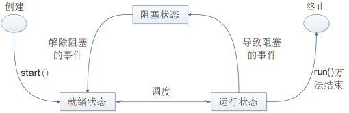

6.1 多线程
打开计算机，可以同时运行很多的程序，比如一边挂着QQ，一边放着音乐，同时还可以收发电子邮件……能够做到这样是因为一个操作系统可以同时运行多个程序。一个正在运行的程序对于操作系统而言称为进程。
程序和进程的关系可以理解为，程序是一段静态的代码，是应用程序执行的蓝本，而进程是指一个正在运行的程序，在内存中运行，有独立的地址空间。
线程可以称为轻量级进程，它和进程一样拥有独立的执行路径。线程和进程的区别在于，线程存在于进程中，拥有独立的执行堆栈和程序计数器，没有独立的存储空间，而是和所属进程中的其他线程共享存储空间。
传统的程序，一个进程里只有一个线程，所以也称为单线程程序，而多线程程序是一个进程里拥有多个线程，两者间的结构区别如图6.1所示。

图6.1 多线程进程示意图
6.1.1 线程引入
在操作系统中，使用进程是为了使多个程序能并发执行，以提高资源的利用率和系统吞吐量。在操作系统中再引入线程，则是为了减少采用多进程方式并发执行时所付出的系统开销，使计算机操作系统具有更好的并发性。
操作系统操作进程，付出的系统开销是比较大的。例如创建进程，系统在创建一个进程时，必须为它分配其所必须的资源（CPU 资源除外），如内存空间、I/O 设备以及建立相应的进程控制块。再如撤销进程，系统在撤销进程时又必须先对其所占用的资源执行回收操作，然后再撤销进程控制块。如果要进行进程间切换，要保留当前进程的进程控制块环境和设置新选中的进程的CPU环境。
也就是说，由于进程是一个资源的拥有者，因而在创建、撤销和切换中，系统必须为之付出较大的系统开销。所以，系统中的进程，其数目不宜过多，进程切换的频率也不宜过高，这也就限制了系统并发性的进一步提高。
线程是进程内一个相对独立的、可调度的执行单元。进程是资源分配的基本单位，所有与该进程有关的资源，例如打印机，输入的缓冲队列等都被记录在进程控制块中，以表示该进程拥有这些资源或正在使用它们。与进程相对应，线程与资源分配无关，它属于某一个进程，并与进程内的其他线程一起共享进程的资源。另外，进程拥有一个完整的虚拟地址空间，而同一进程内的不同线程共享进程的同一地址空间。
线程是操作系统中的基本调度单元，进程不是调度的单元，所以每个进程在创建时，至少需要同时为该进程创建一个线程，线程也可以创建其他线程。进程是被分配并拥有资源的基本单元，同一进程内的多个线程共享该进程的资源，但线程并不拥有资源，只是使用它们。由于共享资源，所以线程间需要通信和同步机制。
6.1.2 多线程优势
接下来，将介绍采用线程比采用进程的好处，只有理解了采用线程比采用进程的好处才能更好地理解多线程的优势。
（1）系统开销小。用于创建和撤销线程的系统开销比创建和撤销进程的系统开销要少得多，同时线程之间切换时的开销也远比进程之间切换的开销小。
（2）方便通信和资源共享。如果是在进程之间通信，往往要求系统内核的参与，以提供通信机制和保护机制。而线程间通信是在同一进程的地址空间内，共享主存和文件，操作简单，无须系统内核参与。
（3）简化程序结构。用户在实现多任务的程序时，采用多线程机制实现，程序结构清晰，独立性强。
上面提到的是采用多线程的好处，在介绍多线程优势之前，可以先尝试回答这样一个问题—如何提高多任务程序在计算机上的执行效率？提高多任务程序的执行效率，主要有以下三种方法。
第一种做法是提高硬件设备的性能，尤其是增加计算机CPU的个数或提高单个CPU的性能，以提高系统的整体性能。这种做法的问题在于，需要购置新设备，代价昂贵。
第二种做法是为这个程序启动多个进程，让多个进程去完成一个程序的多个任务，共享系统资源，也能达到提高系统性能的目的。但因为需要在这多个任务之间共享、交换数据，系统会比较复杂，而且正如之前所说，创建、撤销和切换进程需要较大的系统开销，会消耗大量的资源。
第三种做法是在程序中使用多线程机制，让每个线程完成独立的任务，因为线程的系统开销小，所以对系统资源的影响小。
通过回答这个问题可以看到，在一个操作系统中，多进程也可以实现多任务的功能，提高系统的执行效率。但是，因为进程本身消耗的资源多，没有采用一个进程中多个线程的方式节约系统资源。
现总结多线程的优势如下。
（1）在程序内部充分利用CPU资源。在操作系统中，通常将CPU资源分成若干时间片，然后将这些时间片分配给不同的线程使用。当执行单线程程序时，单线程可能会发生一些事件，使这个线程不能使用CPU资源，对于CPU而言，该程序处于不能使用CPU资源的状态。而如果使用多线程机制，当一个线程不能使用CPU资源时，其他线程仍可以申请使用CPU资源，使得程序的其他线程继续运行。如果是多CPU计算机，则多个CPU可以分别执行一个程序里的多个线程，程序的并发性得到进一步提升。
（2）简化多任务程序结构。如果不采用多线程机制，那么要完成一个多任务的程序，则有两种解决方法。一种是采用多个进程，每个进程完成一个任务，多个进程共同完成程序的功能，当然这其中的缺点前面已经详细介绍过。另一种解决办法还是单线程，在程序中判断每项任务是否应该执行以及什么时候执行。这就让程序变得复杂，不易理解，而且程序内部不能实现多任务，执行速度慢。采用了多线程机制，可以让每个线程完成独立的任务，保持线程间通信，从而保证多任务程序功能的完成，也使程序结构更加清晰。
（3）方便处理异步请求。例如当用户访问服务器程序时，最简单的处理方法就是，服务器程序的监听线程为每个客户端连接建立一个线程进行处理，然后监听线程仍然负责监听来自客户端的请求。使用多线程机制，可以很好地处理监听客户端请求和处理请求之间的矛盾，方便异步请求的处理。
（4）方便处理用户界面请求。如今所见即所得的用户界面程序，都会有一个独立的线程来扫描用户的界面操作事件。例如当用户单击一个按钮时，按钮单击事件被触发，而这个线程会扫描出用户界面操作事件。如果使用单线程处理用户界面事件，则需要通过循环来对随时发生的事件进行扫描，在循环的内部还需要执行其他的代码。
6.1.3 线程状态
线程是相对独立的、可调度的执行单元，因此在线程的运行过程中，会分别处于不同的状态。通常而言，线程主要有下列几种状态。
（1）就绪状态：线程已经具备运行的条件，等待调度程序分配CPU资源给这个线程运行。
（2）运行状态：调度程序分配CPU资源给该线程 ，该线程正在执行。
（3）阻塞状态：线程正等待某个条件符合或某个事件发生，才会具备运行的条件。
下面是线程的状态转换图，通过该图，会给大家介绍线程的执行过程和状态转换。

图6.2 线程状态转换图
对线程的基本操作主要有以下5种，通过这五种操作，使线程在各个状态之间转换。
- 派生
线程属于进程，可以由进程派生出线程，线程所拥有的资源将会被创建。一个线程即可以有进程派生，也可以由线程派生。在Java中，可以创建一个线程并通过调用该线程的start()方法使该线程进入就绪状态。
- 调度
调度程序分配CPU资源给就绪状态的线程，使线程获得CPU资源进行运行，即执行Java线程类中run()方法里的内容。
- 阻塞
正在运行状态的线程，在执行过程中需要等待某个条件符合或某个事件发生，此时线程进入阻塞状态。阻塞时，寄存器上下文、程序计数器以及堆栈指针都会得到保存。
- 激活
在阻塞状态下的线程，如果需要等待的条件符合或事件发生，则该线程被激活并进入就绪状态。
- 结束
在运行状态的线程，线程执行结束，它的寄存器上下文以及堆栈内容等将被释放。